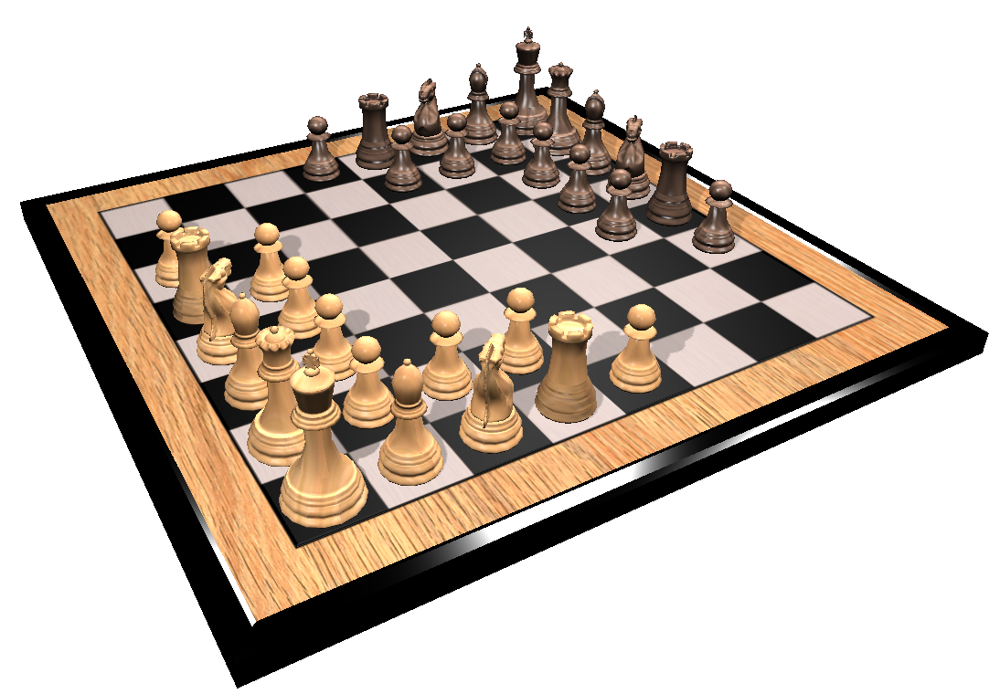

Rules for Edgy Chess (tl;dr)
Turn your board 45 degrees and setup the pieces starting with your king in your corner as shown below:

Pawns move diagonally forward one step at a time ( )
and capture to the side of their path ().
)
and capture to the side of their path ().
Pawns are promoted on the opponents non-pawn fields ().
Castling is allowed but there is no en passant.
All other rules are like in classic chess.
Enjoy!
Overview
Edgy Chess is a variant of Regular Orthodox Classic Western Chess. It uses the same geometry, same type of pieces, same number of pieces, castling, an in general the same rules as classic chess. It differs from classic chess in the initial setup of the board as well as the movement and promotion of Pawns.
This all makes a lot of sense when you see the initial board setup with the corner pointing towards you. The beauty of this variant is that it can be played with any classic chess board and pieces available in the world and is easy to learn for anyone who knows how to play chess. It's actually easier to learn than classic chess since there's no en passant rule. The setup also leads to more aggressive play since opponent pieces are on average a bit closer together.
It looks like chess but it is a new game. Same, same, but different.
Rules
Note: Differences to classic chess are shown in italic.
Setup
Edgy Chess is played on a chessboard, a square board divided into 64 squares (eight-by-eight) of alternating color, which is like the board used in draughts (checkers). No matter what the actual colors of the board, the lighter-colored squares are called "light" or "white", and the darker-colored squares are called "dark" or "black". Sixteen "white" and sixteen "black" pieces are placed on the board at the beginning of the game. The board is placed so that a dark corner square is in front of each player.
Each player controls sixteen pieces:
| Name | Count | White Symbols | Black Symbols |
| King | 1 | ||
| Queen | 1 | ||
| Rook | 2 | ||
| Bishop | 2 | ||
| Knight | 2 | ||
| Pawn | 8 |
At the beginning of the game, the pieces are arranged as shown in the diagram. The king is placed in the corner first. Then the queen, a bishop, a knight, and a rook are placed along the left edge. A bishop, a knight, and a rook are placed along the right edge. The pawns are placed in front of those pieces (see diagram). The phrases to remember this setup, are "king in the corner" and "black in front". The latter refers to setting up the board so that the square closest to each player is black.
Play of the Game
The player controlling the white army is named "White"; the player controlling the black pieces is named "Black". White moves first, then players alternate moves. Making a move is required; it is not legal to skip a move, even when having to move is detrimental. Play continues until a king is checkmated, a player resigns, or a draw is declared, as explained below. In addition, if the game is being played under a time control, then players who exceed their time limit lose the game.
Movement
Basic moves
Each chess piece has its own method of movement. Moves are made to vacant squares except when capturing an opponent's piece.
Apart from any movement of the knight and the occasional castling maneuver, pieces cannot jump over each other. When a piece is captured (or taken), the attacking piece replaces the enemy piece on its square (en passant does not exist in Edgy Chess). The captured piece is thus removed from the game and may not be returned to play for the remainder of the game. The king can be put in check but cannot be captured (see below).
 King
King

The king can move exactly one square horizontally, vertically, or diagonally. Only once per player, per game, is a king allowed to make a special move known as castling (see below).

 Rooks
Rooks
The rook moves any number of vacant squares vertically or horizontally. It also is moved while castling.

 Bishops
Bishops
The bishop moves any number of vacant squares in any diagonal direction.
 Queen
Queen

The queen can move any number of vacant squares diagonally, horizontally, or vertically.
 Knights
Knights
The knight moves to the nearest square not on the same rank, file, or diagonal. In other words, the knight moves two squares horizontally then one square vertically, or one square horizontally then two squares vertically. Its move is not blocked by other pieces: it jumps to the new location.
Pawns

Pawns have the most complex rules of movement:
- A pawn can move forward diagonally one square, if that square is unoccupied. It's not allowed to move pawns two squares from the initial position. A pawn cannot move backwards.
- Pawns are the only pieces that capture differently from how they move. They can capture an enemy piece on either of the two adjacent spaces to the space they are on (i.e., the two squares orthogonally in front of them) but cannot move to these spaces if they are vacant.
- The pawn is also involved in a special move called promotion (see below).
- Note: En passant is not available.
Castling
Castling consists of moving the king two squares towards a rook, then placing the rook on the other side of the king, adjacent to it. Castling is only permissible if all of the following conditions hold:
- The king and rook involved in castling must not have previously moved;
- There must be no pieces between the king and the rook;
- The king may not currently be in check, nor may the king pass through or end up in a square that is under attack by an enemy piece (though the rook is permitted to be under attack and to pass over an attacked square);
En Passant
En passant is not available in Edgy Chess.
Pawn Promotion
If a pawn advances to a promotion field (see diagram), it is then promoted (converted) to a queen, rook, bishop, or knight of the same color, the choice being at the discretion of its player (a queen is usually chosen). The choice is not limited to previously captured pieces. Hence it is theoretically possible for a player to have up to nine queens or up to ten rooks, bishops, or knights if all their pawns are promoted. If the desired piece is not available, the player should call the arbiter to provide the piece.
White pawns promote on squares e8-h8-h4 (marked with white diamonds); black pawns on a5-a1-d1 (marked with black diamonds). Note that the pawns that start on a6 and h3 cannot promote without moving toward the center of the board via capturing.
Check
A king is in check when it is under attack by one or more enemy pieces. A piece unable to move because it would place its own king in check (it is pinned against its own king) may still deliver check to the opposing player.
A player may not make any move which places or leaves his king in check. The possible ways to get out of check are:
- Move the king to a square where it is not threatened.
- Capture the threatening piece (possibly with the king).
- Block the check by placing a piece between the king and the opponent's threatening piece.
End of the Game
Checkmate
If a player's king is placed in check and there is no legal move that player can make to escape check, then the king is said to be checkmated, the game ends, and that player loses. Unlike other pieces, the king is never actually captured or removed from the board because checkmate ends the game.
The diagram shows a typical checkmate position. The white king is threatened by the black queen; every square to which the king could move is also threatened; it cannot capture the queen, because it would then be threatened by the rook.
Draws
The game ends in a draw if any of these conditions occur:
- The game is automatically a draw if the player to move is not in check but has no legal move. This situation is called a stalemate. An example of such a position is shown in the diagram to the right.
- The game is immediately drawn when there is no possibility of checkmate for either side with any series of legal
moves. This draw is often due to insufficient material, including the endgames
- king against king;
- king against king and bishop;
- king against king and knight;
- king and bishop against king and bishop, with both bishops on diagonals of the same color.
- Both players agree to a draw after one of the players makes such an offer.
The player having the move may claim a draw by declaring that one of the following conditions exists, or by declaring an intention to make a move which will bring about one of these conditions:
- Fifty-move rule: There has been no capture or pawn move in the last fifty moves by each player.
- Threefold repetition: The same board position has occurred three times with the same player to move and all pieces having the same rights to move, including the right to castle or capture en passant.
If the claim is proven true, the game is drawn.
At one time, if a player was able to check the opposing king continually (perpetual check) and the player indicated their intention to do so, the game was drawn. This rule is no longer in effect; however, players will usually agree to a draw in such a situation, since either the rule on threefold repetition or the fifty-move rule will eventually be applicable.
Notation
Since Edgy Chess is using the same board, pieces, and movements as classic chess, all types of Chess Notation may be used.
On this website, we use the player view for showing Edgy Chess boards and pieces. However, as an alternative graphical presentation of an Edgy Chess game, one can certainly use the traditional graphics for chess.

Attribution
Some of the text above was extracted from Wikipedia, under Creative Commons Attribution-ShareAlike 3.0 License and adapted to the rules of Edgy Chess. For more details and references, please access the original articles about the Rules of Chess and Legan Chess.